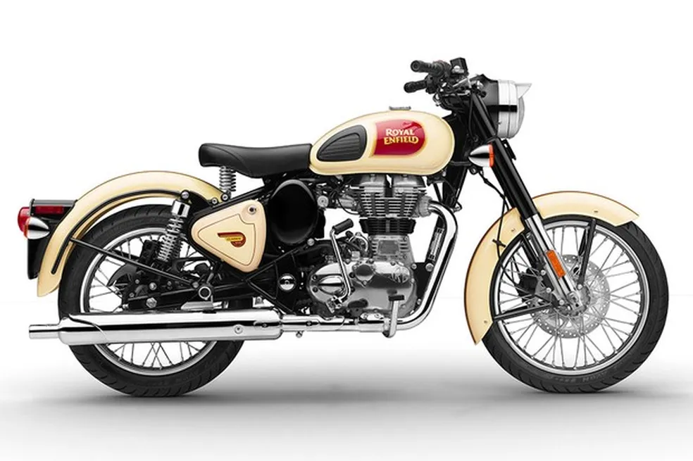
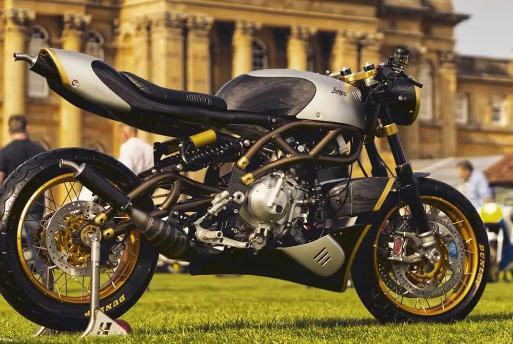

Estilo Clásico y Elegante
Las motos británicas se caracterizan por su diseño clásico y elegante, que combina líneas limpias con detalles vintage.
Innovaciones Tecnológicas
Las marcas británicas han sido pioneras en innovaciones como los motores de alta cilindrada y los sistemas de suspensión avanzados.
